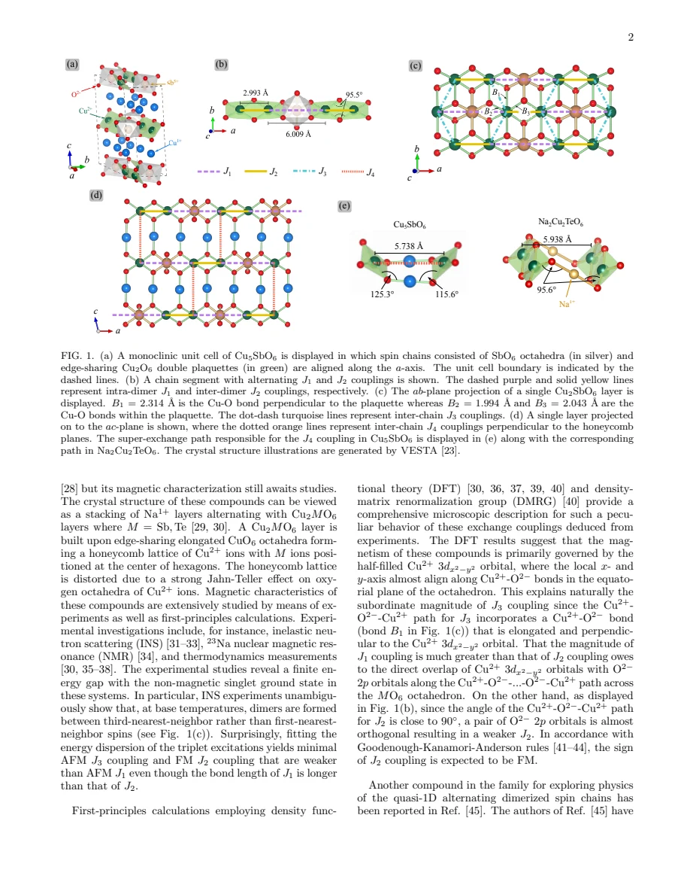
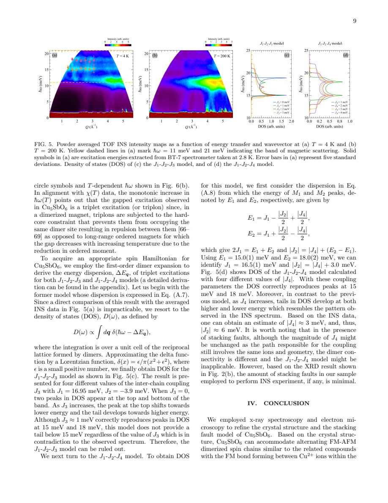
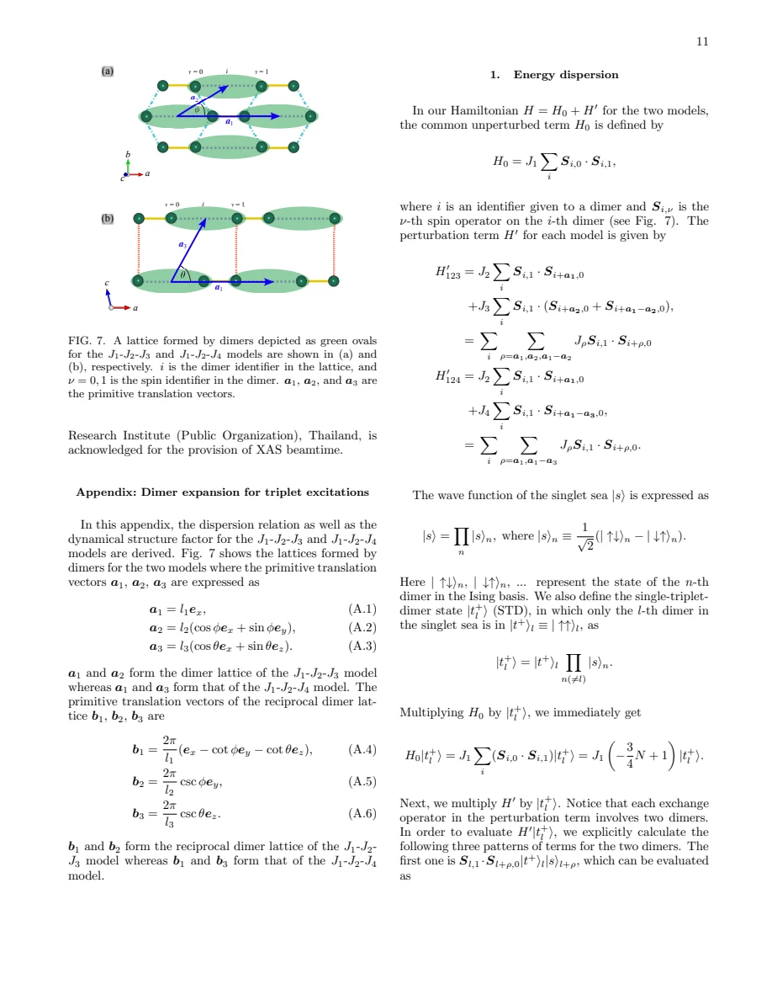

experiment and theory · Piyakulworawat · supplied source 2025
Coupled dimerized alternating-bond quantum spin chains in the distorted honeycomb-lattice magnet Cu5SbO6
The supplied 2025 preprint favors alternating AF-FM chains coupled mainly between layers, using spectral tails as well as peak positions to distinguish models.
The question: Which magnetic exchange network explains Cu5SbO6's neutron excitations and magnetization?
Before you start: the few terms you need
- Exchange J: coupling in J S_i·S_j, positive for antiferromagnetic coupling here
- Triplon: a mobile triplet excitation above a dimer singlet background
- Powder averaging: averaging scattering over crystal orientations
- Density of states: how many excitations occur at each energy
See → explain → test
Understand it in four pictures.
Picture 1 / 4
Distance does not rank exchange
Look for: The short Cu-Cu pair carries FM J2; the strong AF J1 crosses a hexagon through oxygen-mediated paths.
Swipe across the picture to read every label, or enlarge it below.
- Short pair: J2 < 0
- Across hexagon: J1 > 0
Teaching exchange-path comparison. These are the preprint's J labels, not a universal convention.
Orbital overlap and superexchange geometry matter more than the shortest Cu-Cu separation alone.
Picture 2 / 4
Test the full band
Look for: The magnetic response occupies roughly 11–21 meV and has peaks near 15 and 18 meV.
Swipe across the picture to read every label, or enlarge it below.
- Two peaks plus both tails
- Compare candidate DOS
- Favor J1-J2-J4
Teaching evidence chain, not a reproduced neutron intensity map or measured DOS.
Matching two peaks is insufficient if the model fails to produce the low-energy tail.
Picture 3 / 4
Ask where chains connect
Look for: Compare coupling J3 inside a layer with coupling J4 between layers.
Swipe across the picture to read every label, or enlarge it below.
- J1-J2-J3 model
- J1-J2-J4 model
Teaching connectivity comparison; the crystal honeycomb and effective spin graph are different descriptions.
The favored exchange graph links dimerized chains across honeycomb layers.
Picture 4 / 4
Cross-check a model
Look for: Use the neutron-based exchanges in QMC susceptibility and magnetization, then compare with independent measurements.
Swipe across the picture to read every label, or enlarge it below.
- Neutron band
- Estimate J values
- QMC response
- Compare magnetization
Teaching workflow. No QMC results are regenerated by this illustration.
Agreement across probes strengthens the proposed starting Hamiltonian while retaining approximation and stacking limits.
Check the original: PDF p. 7 · PDF p. 8 · PDF p. 9 · PDF p. 10
Predict before revealing
Two candidate models put peaks at 15 and 18 meV, but only one reproduces the tail down toward 11 meV. Which information is decisive here?
Choose an answer, then compare the reasoning.
The paper rejects its first-order J1-J2-J3 comparison because it lacks the observed low-energy tail, despite matching peaks.
Read the answer
The low-energy tail adds a constraint that distinguishes the connectivity The paper rejects its first-order J1-J2-J3 comparison because it lacks the observed low-energy tail, despite matching peaks.
Go deeper Follow the full argument
Reconsider what a structural dimer means
The preprint begins with a distinction easy to miss when reading the older chemical study: a short Cu-Cu distance need not be the dominant antiferromagnetic bond. Jahn-Teller distortions orient the half-filled Cu orbital, and oxygen paths determine which overlaps are effective. The proposed chain has a strong antiferromagnetic J1 crossing a hexagon and a weaker ferromagnetic J2 between nearer Cu ions. The paper motivates that sign from a nearly 90-degree Cu-O-Cu geometry and discusses why the in-plane interchain path J3 is weak. In Cu5SbO6, the alternative interlayer path through Cu+ has more favorable angles than the corresponding Na-based compounds. This is a physically motivated candidate graph that must still be tested experimentally, rather than an exchange map inferred from nearest-neighbor distances alone.
Establish the structure and sample quality first
Single-crystal and powder diffraction refine the monoclinic structure; EXAFS helps distinguish Cu+ spacer sites from Cu2+ honeycomb sites, which ordinary diffraction cannot easily separate by oxidation state. Electron microscopy and selected-area diffraction examine stacking faults. The proposed fault model alternates ideal and fault translations along a, explaining why selected reciprocal-space rows streak while others do not. Samples synthesized near 1150 degrees Celsius show substantially cleaner stacking than the lower-temperature powder. This is important because the favored J4 exchange links neighboring layers: changing how layers register can change dimer connectivity even if a local exchange path retains similar strength. The neutron sample is reported to have minimal faults, so the ideal J1-J2-J4 graph is a plausible starting model for that sample.
Use intensity, temperature and tails together
The low-temperature neutron map contains magnetic scattering from about 11 to 21 meV, with prominent peaks near 15 and 18 meV. The high-temperature spectrum identifies phonon features, whose intensity grows with momentum transfer and temperature, whereas magnetic intensity weakens. A phonon peak around 12 meV is therefore treated separately from the magnetic band. Because powder averaging removes directional information, the authors compare calculated excitation densities of states rather than fitting a fully resolved dispersion. In the first-order treatment, a J1-J2-J3 model can place two peaks correctly but does not reproduce the tail below 15 meV. A J1-J2-J4 model develops tails on both sides. The discriminating information is the band shape beyond its most visible peaks; the preferred model is consequently more constrained than a two-number peak match.
What the coupling estimates do and do not mean
For the J1-J2-J4 density of states, the two peak energies give J1 as their mean and constrain the difference between the magnitudes of J2 and J4. The reported estimates are J1 = 16.5(1) meV, J2 approximately −6 meV, and J4 approximately +3 meV. The tails constrain the latter magnitudes. Those numbers are not three independent direct observations, and the calculation is a first-order dimer expansion. The appendix projects the Hamiltonian into single-triplet states, producing hopping-like matrix elements and cosine terms in the dispersion. Its dynamical structure factor also contains a dimer interference factor, 1 − cos[q·(d1 − d0)], so scattering intensity cannot be identified with the density of states at every momentum. The DOS comparison is useful without being a complete reconstruction of a single-crystal spectrum.
Thermodynamics tests the proposed graph
The susceptibility includes dimerized spins, a small quasi-free spin fraction and a background. Low-temperature magnetization determines the free-spin contribution before the bulk susceptibility is fit. QMC simulations use the neutron-derived exchanges to calculate the interacting dimer response; the fitted g factors differ for fields in and out of the layers. The resulting model is also compared with field-dependent magnetization at 120 K. This cross-check is stronger than fitting every observable with unrelated exchanges. It nevertheless depends on the assumed ideal connectivity and chosen Hamiltonian. The supplied document is dated November 6, 2025 and is a preprint; it describes a revised starting magnetic model, not proof that every small coupling, stacking configuration or finite-temperature interaction has been resolved.
Translate the mathematics Key equations and symbol meanings
ΔE(qh,q′l) = J1 − (J2/2) cos(2πqh) − (J4/2) cos(2πq′l)
Symbols: J1: AF intradimer exchange; J2: FM intrachain exchange; J4: AF interlayer coupling; qh and q′l: transformed dimensionless reciprocal coordinates.
First-order single-triplon dispersion after a coordinate transformation suitable for the DOS. It is not an exact interacting many-triplon spectrum.
J1 = (E1 + E2)/2; |J2| = |J4| + (E2 − E1)
Symbols: E1 and E2: the approximately 15 and 18 meV DOS peak energies in the J1-J2-J4 comparison.
Peak positions constrain combinations of exchanges. Tail shape supplies additional information about |J4|.
S+−(q,ω) = [1 − cos(q·(d1 − d0))] δ(ω − ΔEq)
Symbols: d0,d1: positions within one dimer; S+−: transverse dynamical structure factor; ΔEq: first-order triplet energy, in the appendix's energy convention.
The two-spin interference factor determines whether a triplet can be bright or weak in scattering. This zero-temperature result uses an ideal singlet background.
Read the evidence A guided look at the original figures

Open the full original page ↗

Open the full original page ↗

Open the full original page ↗
What this paper does—and does not—establish
- Supplied November 6, 2025 preprint; claims are attributed to that version.
- Powder averaging and first-order dimer expansion limit uniqueness of the exchange inference.
- The illustrative diagrams do not reproduce experimental points, fitted DOS or QMC simulations; model connectivity can change with stacking faults.
Explain it back.
Try answering aloud before opening the explanation.
Where is the strong AF J1 bond?
Across a honeycomb hexagon along the dimerized chain, not simply the shortest Cu-Cu pair.
Why must stacking quality matter for J4?
J4 connects layers, so faults can change which dimers connect even if the local path strength stays similar.
Why compare QMC magnetization as well as susceptibility?
It checks whether neutron-derived exchanges and fitted g factors explain another observable within the same model.
Connect the next paper.
Source version, reading coverage and preservation
Complete body and appendix text read; rendered structure, band/DOS and final appendix equations checked on pages 2,9,13,14; references 14–16 inspected structurally.
Reviewed body pages: 1, 2, 3, 4, 5, 6, 7, 8, 9, 10, 11, 12, 13, 14. Cited manuscript-in-preparation and other references not independently reviewed.
Original file retained byte for byte. SHA-256: 69e9d642bc223e75a7c967950194f7baa424b61fa0673ab2502dd60d65b142bf
Filename: Preprint - Piyakulworawat - Coupled dimerized spin chains in Cu5SbO6 - 2025.pdf.